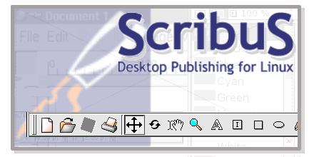

Das Scribus-Handbuch

Franz Schmid: Franz.Schmid@altmuehlnet.de (Programmierung und Copyrights)
Thomas Zastrow: webmaster@thomas-zastrow.de (Dokumentation)
(Version 0.0.5, Stand: 16.12.2001, zu Scribus-Version 0.4.10)
Inhaltsverzeichnis
- Kapitel 1: Einführung
- Kapitel 2: Die Bedienelemente
- Kapitel 3: Das Dokument
- Kapitel 4: Die Scribus-Objekte
- Kapitel 5: Tutorial
--------------------------------
Copyright
Scribus Copyright 2001 Franz Schmid , Franz.Schmid@altmuehlnet.de
This program is free software; you can redistribute it and/or modify it under the terms of the GNU General Public License as
published by the Free Software Foundation; either version 2 of the License, or (at your option) any later version.
This program is distributed in the hope that it will be useful, but WITHOUT ANY WARRANTY; without even the implied warranty
of MERCHANTABILITY or FITNESS FOR A PARTICULAR PURPOSE. See the GNU General Public License for more details.
You should have received a copy of the GNU General Public License along with this program; if not, write to the Free
Software Foundation, Inc., 675 Mass Ave, Cambridge, MA 02139, USA.